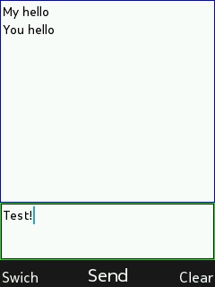

Chat gui code sample for MRE platform mobile phone (including Nokia S30+) For use on Nokia mobile phones, the application must be signed using the IMSI code of your SIM card. More information is available at: https://vxpatch.luxferre.top "chat_gui.vxp"
